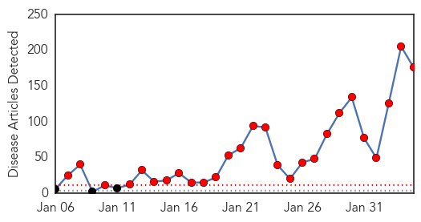
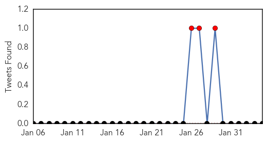
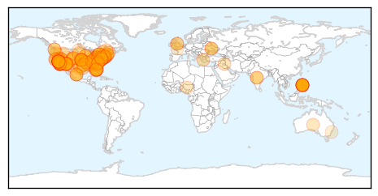

Toggle navigation
Early Warning
Daily Alerts
Measles
Feb 04, 2015
Compare to:
-
Dengue Fever
Hemmorhagic Fever
Mold/Fungal Infection
Influenza
Meningitis
Pertussis / Whooping Cough
Middle East Respiratory Syndrome
Cholera
Hepatitis
Chikungunya
Yellow Fever
Bubonic Plague
West Nile Virus
Swine Flu
Ebola
Unknown
Mumps
30 Day Trends
Web: 27
alerts
, 0
warnings
Twitter: 4
alerts
, 0
warnings
Top Articles:
Showing top 50 articles...
0.995
Measles case confirmed in Niagara
0.993
Health officials urge families to get measles vaccinations
0.993
Disneyland measles outbreak isn't largest in recent memory
0.993
Disneyland measles outbreak isn't largest in recent memory
0.992
Disneyland measles outbreak isn't largest in recent memory
0.992
U.S. Measles Cases Now Exceed 100: CDC
0.992
Disneyland measles outbreak isn't largest in recent memory
0.992
Disneyland measles outbreak isn't largest in recent memory
0.991
Disneyland measles outbreak isn't largest in recent memory
0.990
Disneyland measels outbreak shows the need for vaccination
0.990
Measles: Klotz center discusses likelihood of an outbreak on campus
0.990
Disneyland measles outbreak isn't largest in recent memory
0.989
Disneyland measles outbreak isn't largest in recent memory
0.989
Disneyland measles outbreak isn't largest in recent memory
0.989
Disneyland measles outbreak dwarfed by Amish country spike
0.989
Northern Voices Online Measles outbreak
0.988
Why you should, and shouldn't, worry about measles
0.988
Measles found in middle-aged man in Port Angeles; officials 'intensely working' to determine if anyone exposed in the community -- Port Angeles Port Townsend Sequim Forks Jefferson County Clallam Coun
0.986
Disneyland measles outbreak isn't largest in recent memory - Times-Gazette
0.986
Measles case confirmed in Niagara Region
0.985
7 AZ residents sickened with measles no longer infectious
0.985
What Would It Take for Measles to Return Permanently to the US
0.981
NC ranks 3rd best in nation for measles vaccination
0.977
Why you should, and shouldn't, worry about measles
0.977
Of Mice and Measles
0.976
COLUMN-Vaccines: The best way to persuade parents is the worst for kids
0.976
With Confirmed Measles Cases In Many Nearby States, Idaho Health Officials Urge Vaccination
0.975
Possible Measles Case in Churchill; Awaiting Test Results for Wa
0.974
Measles vaccination encouraged
0.973
Measles can live up to 2 hours on a surface or in the air, CDC warns
0.972
Measles: Vaccine made it rare in US but outbreaks still sparked by travellers
0.972
Vaccine made it rare in US but outbreaks still sparked by travellers
0.970
No measles cases confirmed locally, but medical officials urge vaccination: News
0.969
Epidemiologist urges people to get vaccinated against measles
0.969
Officials confirm Wartburg student does not have measles
0.967
Facts Not Fear
0.965
Editorial: Reject scare tactics on vaccinations
0.964
Weak flu vaccine, measles get lawmakers’ concern
0.963
The Portland Press Herald / Maine Sunday Telegram
0.959
Measles FAQ From Deschutes County
0.957
Measles outbreak puts Chicago parents on high alert
0.956
Families at Mariposa School refusing vaccine
0.955
4 new possible measles cases reported, one is 'probable'
0.954
To Vaccinate or Not to Vaccinate: Disneyland Measles...
0.953
Rand Paul repeats baseless vaccine claims
0.951
Federal health officials grilled on vaccinations
0.949
California measles outbreak
0.944
Dr. Tom Frieden: Vaccines Can Prevent Measles From Being a Disease of the Future
0.940
Measles returns to Pennsylvania
0.940
Measles Outbreak Reaches Pennsylvania
Top Tweets:
No tweets found for Feb 04, 2015
Web/News Articles

Tweets

Article Locations

Article Confidences